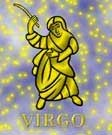

<html>
<head>
<title>Szûz</title>
<script type="text/javascript" src="js/public.js"></script>
<script type="text/javascript" src="js/subpage.js"></script>
<script language="JavaScript1.1">
IMG_PICT="images/inte/horo/" 
horopict = ""
var subpage = new Array(
horopict+"Az ész, a logika, a kereskedelem gyermeke. Varázsló, az élet szinte csak játék neki, mindenhol sikeres, minden kapu kinyílik elõtte. Sokszor elveszik a részletekben. Ha kap egy hibátlan munkát, õ még ezer hibát talál benne, született bíráló, kritikus. Társaságban szerény, tartózkodó, inkább kérdez, mint beszél. Kiváló az alkalmazkodó és diplomáciaérzéke, de ezek nem született, hanem kifejlõdött tulajdonságok. Kitûnõ megfigyelõ, a józan, észszerû gondolkodást mindennél fontosabbnak tartja. Az ész és nem az érzelmek vezérlik a tetteit. Képtelen egyedül élni, de úgy alakítja magánéletét, hogy boldog lesz. Zárkózott, nem mutatja ki érzelmeit. Föld-jegy, negatív töltésû, változó minõség. Uralkodó bolygója a Merkúr, ami jelzi mentális érdeklõdését. Hangsúlyozott a közlési, közvetítési képesség, fõként gyakorlati érdeklõdési körökben és hasznos elfoglaltságokban. Rendszerint számtalan megbízatása van. A magasrendû Szûz kiváló szellemi képességekkel rendelkezik. Mint a Föld-jegyû embereket általában jellemzi a gyakorlati érzék. Anyagi javak és pénz dolgában igen gondos és megbízható, alaposan utána néz a részletkérdéseknek. A változó minõség alkalmazkodóképességben nyilvánul meg, valamint a változásra való hajlamban. A Változó-jegyû emberekben nagy a vágy a szolgálattételre, így a Szûz is valamilyen formában szolgálni akarja az embert, az emberiséget. ",
horopict+"A Föld- és a Víz- jegyek negatív jegyek, s mint ilyenek különösképpen fogékonyak a külvilág hatásaira és ezek befogadására. A hûvös, reális, józan ész embere. Elsõdleges célja az anyag rendszerezése és megértése. Hajtja a dolgok mögé látásának a vágya. Magasrendû típus a szellemi tisztaság és a világosság felé törekszik. Lehet idealista, de akkor is a józan ész korlátai között. Kitûnõ szellemi képességekkel rendelkezik. Felfogása gyors, logikája éles. Bele tud merülni a dolgok legkisebb, legaprólékosabb részleteibe. Jó az emlékezõtehetsége, a tapasztaltakat, tanultakat nem felejti el. Alapvetõ szükséglete a munka, megelégedést, megnyugvást, sõt boldogságot talál a munkában. Tehetségét különösen ott bontakoztathatja ki, ahol az aprólékos, gondos figyelem, a pontosság, a rendszerzés szükséges. Úgy tûnik, mintha belsõ kényszer hajtaná a munkára, mert sokszor még ha nem is megy a munka, -még ha morogva is- de csinálja. Fõ jellegzetessége a nüanszírozás. A legkisebb részletecskéket hozza ki az anyagból, s ezeket a legnagyobb finomsággal dolgozza ki. Amilyen kiváló ez a tulajdonság, annyi veszélyt is rejt magában, mert a kis hiba felkutatása mellett könnyen elnézheti a lényeget. Igazi hivatása a munka csiszolása, tökéletesítése lenne. Legalapvetõbb tulajdonsága a kritikai beállítottság. A lelke mélyén megbúvó kisebbségi érzés, önbizalomhiány van. Ami a szívén az a száján, és általában mindenrõl van véleménye. ",
horopict+"A gond és kellemetlenség erõsen lehangolja. Különös jellegzetessége a gyûjtõszenvedély: valamit mindegyik gyûjt, legalább egyszer életében. Nagy gondot fordít személyes tisztaságára, környezete, otthona tisztaságára. Ahol érzi, hogy szeretik ott nyílt és bizalmas, másokkal szemben tartózkodó. Önzõnek tûnhet, pedig nem az, csak az észszerûség szempontjából ítéli meg, hogy adjon vagy ne. Ahol teljesen megszûnik az önzése, az a családja és közeli hozzátartozói. Elsõrendû szempont nála, hogy öregkorára nyugodt megélhetést biztosítson magának. Lelkileg nehezen oldódik fel. Hajlamos túlzott aggodalmaskodásra és körülményeskedésre. Munkában a Szûz ember megbízható, lehet rá számítani. Úgy érzi, neki nem szabad hiányoznia a munkahelyérõl. Hûvös és tartózkodó a Szûz. Ez jelentheti a viselkedés vonzó szerénységét, de jelentheti túlzott érzékenységét is. A szexuális dolgok érdeklik, mégsem egykönnyen hagy fel szûzies viselkedésével. Sok benne a képzeletben ébredt erotika. Inkább barát, mint lángoló szerelmes, de egy merész, tüzes partner felébreszti szenvedélyét. Hasonlattal élve inkább parázs, mint lobogó tûz. Jól tud alkalmazkodni partneréhez. Szívesen veszi annak szeretetét, lelki melegségét. Amíg nincs tisztában érzelmeivel, szerelmi ügyei zavarosak lehetnek. Keresi a praktikus, értelmes tevékenységet igénylõ változatos szórakozásokat. Szereti a csendes olvasgatást. ",
horopict+"A magasrendû típus nem nagyon élhet anélkül, hogy valamilyen nagy tervbe ne kapcsolódna be, amellyel az embereket szolgálhatja. Szívesen tölti idejét tanulmányokkal. A természetes hajlamainak korlátozásához vezet, ha kívánságait figyelmen kívül hagyják és ha túlzott érzelmi reagálásokat várnak tõle. Ez idegességet, ingerlékenységet és nyugtalanságot eredményez. A túlzott aprólékosság azt jelenti, hogy szõrszálhasogatóvá, hibakeresõvé válik. A túlzott kritikusság, válogatósság megnehezíti a partnerválasztást és a barátság kialakulását. Bírálata általában igaz, de ezt nagyon barátságtalanul tudja közölni. A tisztaság iránti jogos igénye tisztaság-mániává válhat. ",
horopict+"<b>Bolygója:</b> a Merkúr<br>"
+"<b>Eleme:</b> a föld<br>"
+"<b>Természete:</b> változékony<br>"
+"<b>Erényei:</b> jó megfigyelõ, alapos, kitartó, türelmes, precíz, megbízható, titoktartó<br>"
+"<b>Hibái:</b> aprólékos, kicsinyes, szigorú kritikus, olykor kötekedõ<br>"
+"<b>Testrésze:</b> a bél <br>"
+"<b>Betegségre való hajlam:</b> anyagcserezavar, máj- és epepanaszok, de ez legtöbbször mentális eredetû<br>"
+"<b>Védõkövek:</b> topáz- kékszínû- jáspis, karneol, sárga achát, sárga zafír<br>"
+"<b>Szerencsekövek:</b> nefrit, peridot, aventurin, zafír, lapis lazuli"
);
</script>
</head>
<BODY background="images/public/background/bg1.jpg">
<script language="JavaScript1.1">
	firstdraw("SZÛZ augusztus 24. - szeptember 23.");
</script>
</body>
</html>